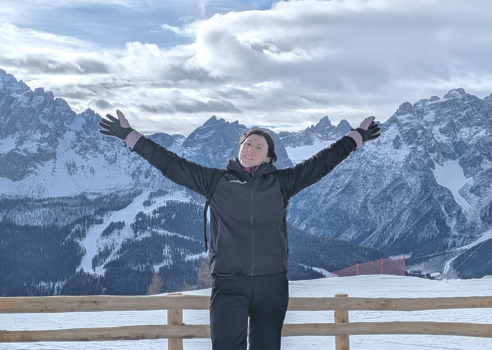

Dear Stripe Design team, I am Vanessa Bonanno, a UX/UI Designer and Accessibility Specialist, and I am applying for the Product Design er, Design Systems role in Barcelona. For the past two and a half years I have been a UX/UI Designer at SMC (DGS Group), designing web platforms fo r industrial, banking and public-sector clients, from research and information architecture to design systems , high-fidelity UI and developer handoff. Before that, I spent a year in research roles at CNR-ISPC in Floren ce and Aalto University in Helsinki, studying how people use and how to improve collaborative digital spaces. Here is how that maps to what you are looking for: **Design systems and component libraries.** I built my team's design-system foundation in Figma: variables, m odes and accessible components. For the dealer portal of a €700M industrial group I created a component libra ry and 40+ pages covering parts catalogue, checkout and warranty claims, with the functional specification ap proved before development started. I argue for reusable components with developers because they make the next feature cheaper for everyone. **Components, states and collaboration with engineering.** Working from design to developer handoff has taugh t me to think in states and responsive behaviour, not in single screens. In the fleet-diagnostics dashboard I designed for an industrial group, every component had to work across role-based views and alert states, and four change requests were integrated before development. **Feedback and iteration.** I run usability tests and tree-testing studies (198 nodes and 675 items to restru cture a bank's IT service catalogue) and I refine with the people who use the work: the homepage and dashboar ds of Italy's national PNRR funding platform went through seven rounds before delivery. **Accessibility built into the foundations.** I have delivered 12+ WCAG 2.1/2.2 audits for 7 organisations, d ocumenting 1000+ findings tested with NVDA, VoiceOver and TalkBack. In a design system, accessibility is chea pest when it lives in the component itself, and I know what assistive technology needs from one. **Working with AI.** You ask for proficiency with AI design tools, so I want to be honest about my path. Over the last months, with all the changes AI brought to our field, I felt lost and overwhelmed, and I resisted i ntegrating it into my workflow. I know many of the implications and downsides of the industry behind it, and its impact on the climate and on the natural world worries me. Then I watched "Stop building zombie UIs", Kat ie Dill's talk at the Lenny and Friends summit. In twenty minutes it gave me concrete strategies and a differ ent way to see it: working alongside AI as a help, not a replacement. The possibility of creating something c ompletely new with it intrigues me a lot. Since then I have been studying and practising intensively with age nts and AI tools for design, and today I want to make this a real part of how I work. I am an EU citizen, ready to relocate to Barcelona, and I have already lived and worked abroad, in Helsinki. You can find my portfolio at: vanessabonanno.github.io/myportfolio Thank you for your time and consideration. Sincerely, Vanessa Bonanno
I work at SMC company since January 2024 as a UX and UI designer, producing websites for corporate, public administration (PA), B2B, banking and insurance sectors, where accessibility, and compliance are essential. My work focuses on translating complex requirements into intuitive interfaces that balance business goals and user needs.
My core skills include:
- User research (interviews, surveys, usability testing)
- Information architecture & user flows
- Wireframing and high-fidelity prototyping
- Design systems & component libraries
- Visual design and UI patterns
- Accessibility (audit, according to EU Directive 2016/2102)
- Responsive design
- Design thinking and problem solving
My career goal is to apply and expand the knowledge I acquired in interactive media, UX and UI design, multimedia and video editing, 3D modelling, graphic and sound design. I aim to contribute to multidisciplinary teams where strategy, creativity and technology intersect to create meaningful digital products.
During my bachelor’s and master’s degree studies, I learned how to code, which allows me to collaborate effectively with developers and understand technical constraints from the early design stages. In my spare time, I find it fulfilling to film and edit videos, and I usually rely on open-source softwares for post-production (DaVinci Resolve). In the past I also explored music production: playing lots of musical instruments, I am able to record them and mix the audio on Ableton or Audacity, applying my technical background to the creative process of sound design.
Curious and open-minded, I am always eager to learn and I enjoy discovering new approaches to transform ideas into real, tangible experiences. I find great value in drawing, whether on paper or digitally: for me, it is both a relaxing practice and a powerful creative way to explore ideas in ways that words sometimes cannot capture. Recently, I am practicing with photographic composition using film cameras, and in my spare time I like to unwind by watching a good movie and crocheting. Thanks for reading and have a good day, Vanessa!